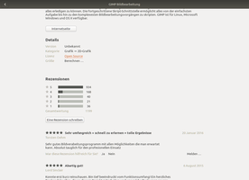

Ubuntu Software
Dieser Artikel wurde für die folgenden Ubuntu-Versionen getestet:
Ubuntu 16.04 Xenial Xerus
Zum Verständnis dieses Artikels sind folgende Seiten hilfreich:
Ubuntu Software, eine minimal angepasste Version von GNOME Software  , ersetzt ab Ubuntu 16.04 das bis dahin eingesetzte Software-Center.
, ersetzt ab Ubuntu 16.04 das bis dahin eingesetzte Software-Center.
Obwohl schon das Software-Center nur einen begrenzten Funktionsumfang bietet, wurde dieser mit dem neuen Programm weiter reduziert: Es wird nur ein Bruchteil der ca. 40.000 Pakete umfassenden Paketquellen angezeigt, da sich Ubuntu Software zum einen auf grafische und zum anderen auf häufig genutzte Programme beschränkt. So lassen sich z.B. die allermeisten Shell-Anwendungen oder Serversoftware wie z.B. der Webserver Apache oder die Datenbank MySQL nicht über Ubuntu Software installieren. Im Gegensatz zum Software-Center enthält Ubuntu Software jedoch keine kommerziellen Angebote oder Werbung für diese.
Installation¶
Bei Ubuntu, Ubuntu GNOME und Xubuntu ist das Programm bereits vorinstalliert. Ansonsten wird folgendes Paket benötigt [1]:
ubuntu-software (universe)
 mit apturl
mit apturl
Paketliste zum Kopieren:
sudo apt-get install ubuntu-software
sudo aptitude install ubuntu-software
Bedienung¶
Das Programm kann über den Eintrag "Software" im Anwendungsmenü gestartet werden [2]. Das Programm kann ohne Root-Rechte [3] genutzt werden, um Informationen über die installierten Pakete zu erhalten. Zur Installation und Deinstallation von Programmen sind aber weiterhin Root-Rechte erforderlich.
| Ubuntu Software |
| Programmbeschreibung (oben) |
|  |
| Programmdetails, Rezensionen (unten) |
Am oberen Fensterrand befinden sich drei Schaltflächen, um entweder alle Programmen oder nur die installierten bzw. die zu aktualisierenden anzuzeigen. Direkt darunter befindet sich ein Suchfeld, das ab dem dritten Zeichen Vorschläge zeigt.
Software-Paketquellen¶
Die Verwaltung der Paketquellen wird im Anwendungsmenü über den Eintrag "Software & Updates" aufgerufen.
Problembehebung¶
Der eingeschränkte Funktionsumfang mag manchen verleiten, auf Ubuntu Software zu verzichten und stattdessen das Software-Center nachzuinstallieren. Da dieses aber nicht mehr weiterentwickelt wird, ist das keine gute Idee.
Eine einsteigerfreundliche Empfehlung fällt derzeit schwer (Stand: Mai 2016). Fortgeschrittene und Profis schwören schon seit längerer Zeit auf Synaptic oder verwenden gleich die Kommandozeile (siehe Advanced Packaging Tool).
Einzelne DEB-Pakete können nicht installiert werden¶
Mit Ubuntu Software konnten bei 16.04 keine einzelnen Pakete installiert werden, wenn zuvor nicht alle Abhängigkeiten erfüllt wurden (1573408). Dies betraf insbesondere Fremdpakete wie Google Chrome, Opera, Vivaldi, TeamViewer usw. Dieser Fehler wurde inzwischen behoben. Auf neu installierten Systemen sollte daher vor jeglichen Installationsversuchen zuerst eine Systemaktualisierung durchgeführt werden.
Als grafischer Ersatz zur Installation von Fremdpaketen kann generell gdebi dienen.
Fremdpakete können nicht deinstalliert werden¶
Obwohl die Installation von Fremdpaketen inzwischen gelöst ist, bleibt die Deinstallation dieser Pakete weiterhin ein Problem. Eine Alternative ist auch hier wieder ein Befehl im Terminal:
sudo apt purge PAKETNAME
 Übersichtsartikel
Übersichtsartikel- Erstellt mit Inyoka
-
 2004 – 2017 ubuntuusers.de • Einige Rechte vorbehalten
2004 – 2017 ubuntuusers.de • Einige Rechte vorbehalten
Lizenz • Kontakt • Datenschutz • Impressum • Serverstatus -
Serverhousing gespendet von